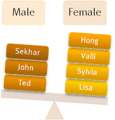

Agenda
- Why partition a table?
- Difference between data distribution and data partitioning
- Partitioning strategies
- Loading partitioned tables
- Partitioning summary
Partitioning in Greenplum
- A mechanism for use in physical database design
- Increase the available options for improving the performance of a certain class of queries
- Propagate data to the child tables
- GP partitioning DDL is different than PostgreSQL partitioning
Why Partition a Table?
- To more efficiently query a subset of a large data set
- decrease query times by avoiding full table scans
- To avoid the overhead and maintenance costs of an index
- To handle increasing volumes of data that the average query doesn't need
- Allow near instantaneous dropping of older data and simple addition of newer data
- Supports a rolling N periods methodology for archiving data
Why Partition a Table?
A little more detail
- Partition elimination/pruning
- Only scan relevant data
- Partition types are RANGE and LIST
- Distribution allocates rows to segments. In each segment, partitioning separates the rows into
distinct files.
- Distribution + Partitioning = "Plaiding" of data
Best Practice: Do not use multi-level partitioning
- Sub-partitions often have little to no data
- Most queries cannot take advantage of partition pruning
Partitioning Methods
RANGE and LIST

JAN 2011
FEB 2011
MAR 2011
APR 2011
RANGE

EMEA
APAC
AMER
AFRI
LIST
When do you partition?
Large fact table

Maintaining rolling data
Data divides evenly
Performance issues

Identifiable access patterns
Historical Data Maintenance
Partition Management

Previous Month
Deep History
Rolling 13 months
Partitioned Table - DATE RANGE
Naming each partition
CREATE TABLE sales(
id int,
sales_date date,
amt decimal(10,2)
)
DISTRIBUTED BY (id)
PARTITION BY RANGE (sales_date)
( PARTITION Jan18 START (date '2018-01-01') INCLUSIVE ,
PARTITION Feb18 START (date '2018-02-01') INCLUSIVE ,
PARTITION Mar18 START (date '2018-03-01') INCLUSIVE ,
…
PARTITION Dec18 START (date '2018-12-01') INCLUSIVE
END (date '2019-01-01') EXCLUSIVE );Partitioned Table - DATE RANGE
Auto-naming with INTERVAL
CREATE TABLE sales(
id int,
sales_date date,
amt decimal(10,2)
)
DISTRIBUTED BY (id)
PARTITION BY RANGE (sales_date)
( PARTITION pre END ('2000-01-01'::date),
PARTITION yearly START ('2000-01-01'::date)
END ('2020-01-01')
EVERY ('1 year'::INTERVAL),
PARTITION post START ('2020-01-01'::date));Partition Table - NUMERIC RANGE
Auto-naming and DEFAULT PARTITION
How many partitions will be created on each segment?
Default Partition:
Good or bad idea?
CREATE TABLE ranking(
id int,
rank int,
yr int,
gender char(1)
)
DISTRIBUTED BY (id)
PARTITION BY RANGE (yr)
( START (2011)
END (2021)
EVERY 1,
DEFAULT PARTITION extra );Partition Table - LIST
LIST Example with DEFAULT PARTITION
CREATE TABLE widgits_staging (
id int,
w_name varchar,
...,
state char(2)
)
DISTRIBUTED BY (id)
PARTITION BY LIST (state)
( PARTITION NE VALUES ('ME','NH','VT','MA','RI','CT'),
PARTITION MidA VALUES ('NY','NJ','PA','DE','MD','DC'),
...
PARTITION West VALUES ('CA','OR','WA','AK','HI'),
DEFAULT PARTITION);Default Partition: Might be a good idea here. Why?
Partitioning an Existing Table
How is it done?
orders TABLE:
order_id int,
order_date date,
order_amt numeric(8,2),
...CREATE TABLE orders_partitioned (
LIKE orders
)
DISTRIBUTED BY (order_num)
PARTITION BY RANGE (order_date)
( START ('01/01/2000'::date)
END ('12/31/2025'::date) INCLUSIVE
EVERY 1 month
);
INSERT INTO orders_partitioned SELECT * FROM orders;
ALTER TABLE orders RENAME to orders_old;
ALTER TABLE orders_partitioned RENAME to orders;
/* verify data transfer and drop orders_old table */
GRANT ... TO orders;
...Partition Maintenance
- Add, Rename, Truncate, Remove
- Exchange
/* Table 'sales_cm' contains sales data for the current month */
/* At the end of the month, add it to sales_history table */
ALTER TABLE sales_cm RENAME to jan18;
CREATE TABLE sales_cm (like sales_history) DISTRIBUTED BY ...;
ALTER TABLE sales_history EXCHANGE PARTITION
FOR ('2018-01-01') WITH TABLE jan18;- Split existing partition
ALTER TABLE sales_history SPLIT PARTITION
FOR ('2018-01-01') AT ('2018-01-16')
INTO (PARTITION jan181to15, PARTITION jan1816to31);Partition Table Details
\d+ rankings
Table "public.rankings"
Column | Type | Modifiers | Storage | Description
--------+--------------+-----------+----------+-------------
id | integer | | plain |
rank | integer | | plain |
year | integer | | plain |
gender | character(1) | | extended |
count | integer | | plain |
Child tables: rankings_1_prt_boys,
rankings_1_prt_girls,
rankings_1_prt_other
Has OIDs: no
Distributed by: (id)
Partition by: (gender)Parent-child details
Further details from pg_partitions and pg_partition_columns catalog views
select partitiontablename as "Table", partitionboundary as "Boundaries",
partitiontype as "PartType", partitionlistvalues as "PartValues"
from pg_partitions where tablename = 'rankings';
Table | Boundaries | PartType | PartValues
----------------------+-----------------------------+----------+-------------------
rankings_1_prt_boys | PARTITION boys VALUES('M') | list | 'M'::character(1)
rankings_1_prt_girls | PARTITION girls VALUES('F') | list | 'F'::character(1)
rankings_1_prt_other | DEFAULT PARTITION other | list |
(3 rows)
select * from pg_partition_columns where tablename = 'rankings';
schemaname | tablename | columnname | partitionlevel | position_in_partition_key
------------+-----------+------------+----------------+---------------------------
public | rankings | gender | 0 | 1
(1 row)Partition Table Loading
- Top level, parent tables are empty
- Data is loaded into child partitions
- COPY or INSERT automatically load data to the correct partition
- Load a staging table and swap the table in place of an existing partition
Partition Table Summary
- Never distribute and partition on the same column!
- Do not use multi-level partitioning (sub-partitions) unless absolutely necessary
- Use partitioning on large tables to improve performance
- Used in addition to, not in place of, distribution
- Use if the table can be divided into roughly equal parts based on the partitioning key
- RANGE partitioning on DATE
- No overlapping ranges or duplicate values
- Partitioning benefits filtering (WHERE clause)
- Avoid DEFAULT PARTITION if possible